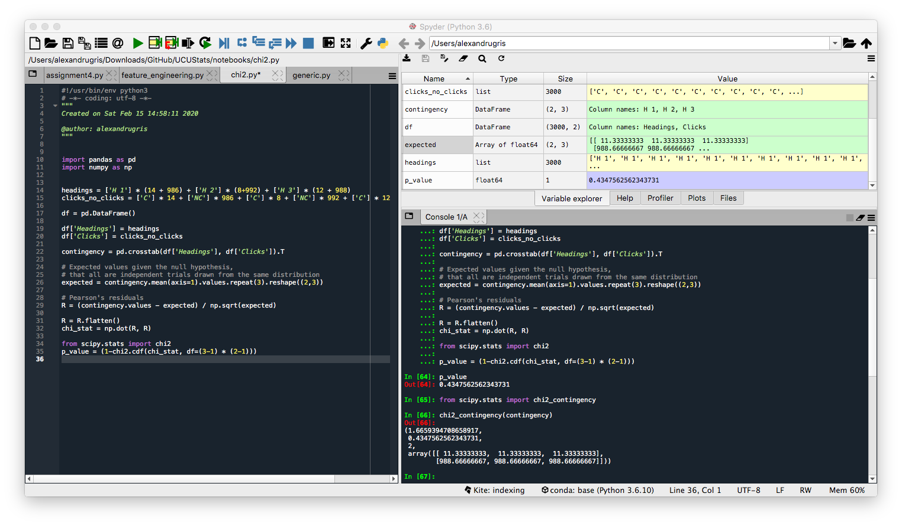
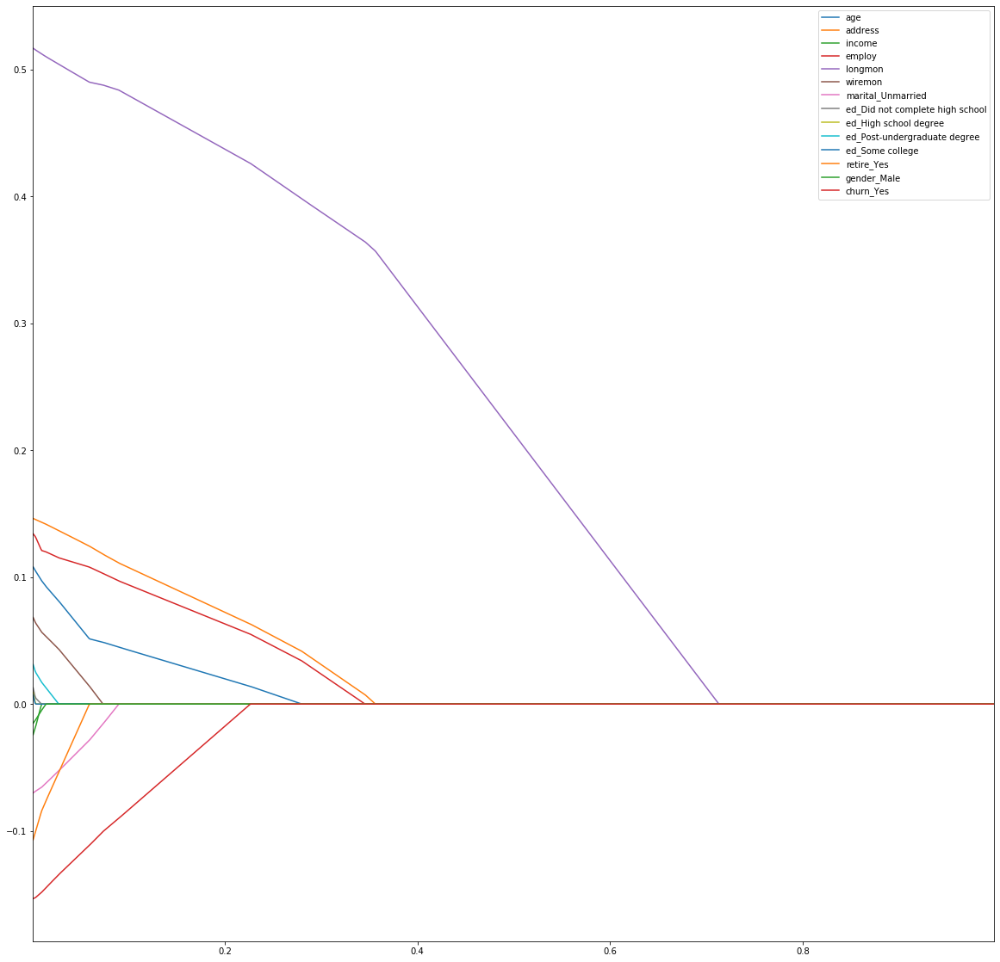

Stats Again
A summary of statistics notions not found anywhere else on this blog. The post touches among others: some descriptive statistics measures, hypothesis testing, goodness of fit, Lasso and Ridge regression.
Descriptive Statistics
For unimodal distributions, we define skewness as a measure of whether the distribution has its its peak towards the left or the right.
Skewness = 1/n * sum( (xi - x_mean) / stdev)^3
A negative value means the sample has its mode to the left, a positive, to the right. Left-skewed means the tail is on the left and the mode is on the right. Right-skewed, the opposite.
The following inequalities stand:
mode < mean < median if the distribution is right skewed and
mean < median < mode if the distribution is left skewed
For bivariate datasets, X and Y, we define correlation and covariance as measures of how X and Y move together monotonically.
sample_covariance = 1/(n-1) * sum((xi - x_mean) (yi-y_mean))
sample_correlation = r = sample_covariance / (x_stddev * y_stddev)
The sample correlation, r, is also called Pearson's correlation coefficient.
A perfect correlation, 1 or -1, means that X and Y move together on a straight line. We can derive the regression line between X and Y as follows:
Y = aX + b
a = covar(X, Y) / Var(X)
b = mean(Y) - a * mean(X) # the regression line always passes through the means of X and Y
For the regression, we define:
r_squared = r^2 = 1 - Var(residuals) / Var(Y)
For linear least squares regression with an intercept term and a single explanatory, this r is the same r as the Pearson's correlation coefficient defined above. It measures the amount of explained variance of Y for this particular regression.
Similarly to the Pearson coefficient which is defined for the values of X and Y, we define the Spearman correlation coefficient, but instead of values we take the ranks. Spearman is more robust, thus less sensitive to outliers.
Chi2 Analysis
For nominal (categorical) values, we can introduce a measure of dependency and correlation. We use the Chi2 statistic to measure the independence of two categorical variables. The Chi2 test works on r rows x c columns contingency tables and assesses wether the null hypothesis of independence among variables is reasonable.
An example for its use would be to test how well different headlines for a website generate more clicks. Let's assume an experiment with N headlines which generated either a click or a no-click. A contingency table to describe the problem would contain on the column axes the N headlines and on the rows axes click or no-click, with the counts for each in the table.
The table and the calculations below come from the Practical Statistics for Data Scientists book:
import pandas as pd
import numpy as np
# generate some data:
headings = ['H 1'] * (14 + 986) + ['H 2'] * (8+992) + ['H 3'] * (12 + 988)
clicks_no_clicks = ['C'] * 14 + ['NC'] * 986 + ['C'] * 8 + ['NC'] * 992 + ['C'] * 12 + ['NC'] * 988
df = pd.DataFrame()
df['Headings'] = headings
df['Clicks'] = clicks_no_clicks
contingency = pd.crosstab(df['Headings'], df['Clicks']).T
# Expected values given the null hypothesis,
# that all are independent trials drawn from the same distribution
expected = contingency.mean(axis=1).values.repeat(3).reshape((2,3))
# Pearson's residuals
R = (contingency.values - expected) / np.sqrt(expected)
R = R.flatten()
chi_stat = np.dot(R, R)
from scipy.stats import chi2
p_value = (1-chi2.cdf(chi_stat, df=(3-1) * (2-1)))
Or, more straightforward, same results:
from scipy.stats import chi2_contingency
# first create the contingency table based on the two categorical variables
df_for_test = pd.crosstab(df['Headings'], df['Clicks']).T
chi2, p_value, degrees_of_freedom, expected_values = chi2_contingency(df_for_test.values)

The return values are described below:
- expected_values - how would the data look like if it were independent
- chi2 - the test statistic, the higher it is, the lower the p-value, the probability that the values are independent
- degrees_of_freedom - dof = observed.size - sum(observed.shape) + observed.ndim - 1 the degrees of freedom for the Chi2 distribution from which the p-value is computed given the test statistic.
Note:
The p-values can be computed through Monte Carlo simulation, by simply sampling N times M samples with the same distribution as the expected values and counting how many times the squared sum of Pearon's residuals (R) exceed the value obtained from our sample. That is the p-value.
Binomial and Hypergeometric Distributions
The binomial distribution is frequently used to model the number of successes in a sample of size n drawn with replacement from a population of size N. If the sampling is carried out without replacement, the draws are not independent and so the resulting distribution is a hypergeometric distribution, not a binomial one. However, for N much larger than n, a rule of thumb is n is less than 10% of N, the binomial distribution remains a good approximation.
If n is large enough, then the skew of the distribution of the expected value is not too large. In this case, a reasonable approximation to B(n, p) is given by the normal distribution N(n*p, n*p*(1-p)). A commonly used rule is that both n*p and n*(1-p) are larger than 10.
The binomial distribution converges towards the Poisson distribution as the number of trials goes to infinity while the product n*p remains fixed or at least p tends to zero. Therefore, the Poisson distribution with parameter λ = n*p can be used as an approximation to B(n, p) of the binomial distribution if n is sufficiently large and p is sufficiently small. According to two rules of thumb, this approximation is good if n >= 20 and p <= 0.05, or if n >= 100 and n*p <= 10.
The hypergeometric distribution is not to be confused with the geometric distribution, the latter giving the probability that the first occurrence of success requires k independent trials, each with success probability p.
Inferential Statistics
Maximum Likelihood Estimate
MLE starts from the premise that if you observe a certain sample, then its probability must be high. It is used to estimate a parameter of the distribution of the population given the observations.
The MLE problem is described as follows:
maximize(P(x1 | distrib(parameter)) * P(x2 | distrib(parameter) * .... * P(xn | distrib(parameter))))
which is equivalent to
maximize(log(P(x1 | ...)) + log(P(x2 |...)) + .... )
Since MLE usually uses gradient descent to find the maximum, it helps if the distribution for which we plan to estimate the parameter is continuous. Otherwise, the maximum must be found through different means.
As an example, let us extract 1000 samples from a t distribution with 5 degrees of freedom. We want to estimate the degrees of freedom knowing that the samples come from a t distribution. This problem of estimating a parameter of the source distribution is a perfect example of when to employ the MLE method.
import matplotlib.pyplot as plt
import numpy as np
import scipy.stats as stats
from scipy.optimize import minimize
from functools import partial
# the samples we extract
sample = np.random.standard_t(5, 1000)
plt.hist(sample)
# problem solved below
def log_likelihood(f, sample: np.array) -> float:
return np.sum(np.log(f(sample)))
def t_distrib(df : int, sample: np.array) -> np.array:
return stats.t.pdf(sample, df=df)
ret = minimize(lambda df: -log_likelihood(partial(t_distrib, df), sample), 10.0)
print(ret.x[0])
A good estimator has low variance and low bias, both preferably 0. Bias is the difference between the true value of the parameter and the expected value of its estimator.
Hypothesis Testing
We define two hypotheses:
H0, the null hypothesis, is considered true until proven false. It is usually in the form 'there is no relationship' or 'there is no effect'.H1, the alternative hypothesis, asserts that there is a relationship or a significant effect.
Hypothesis testing does not aim to prove H1, but rather to say that there is a low probability,usually under 5%, that H0 can occur. There is still thus a possibility that the results of the test occur under H0, but it is considered low. The p-values, which are used in hypothesis testing, represent the probability that we observeH1given thatH0is true. The5%` above is called significance level and its setting depends on the application.
For example, let's assume that someone can tell if the milk was poured before or after the tea in a cup. There are 8 cups, 4 with milk poured before and 4 with milk poured after. Assuming the person manages to correctly identify which one is which in this experiment, can we conclude that the person is able to tell whether the milk was poured before or after?
Let's define the two hypotheses:
H0: correct identification in this experiment is purely due to chanceH1: the person is able to identify which is which
p_observed_results_given_h0 = 1 / Combinations of 8 taken by 4 = 1/70 < 5%
We can conclude that it is unlikely that the person made the choices purely by chance.
T-Tests
T-tests are is used to learn about averages across two categories, for instance the height of males vs the height of females in a sample. It has several forms:
- One sample location test - used to test whether a population mean is significantly different from some hypothesized value. The degrees of freedom is
DF = n - 1wherenis the number of observations in the sample.
t = (sample_mean - hypothesized value) / Standard Error
t = sqrt(n) * (sample_mean - hypothesized value) / (sample_std_dev)
In python we use:
scipy.stats.ttest_1samp(a, popmean, axis=0, nan_policy='propagate')
If the sample size is large (e.g. > 30 observations) and the population standard deviation is known, you can assume the test statistics follows the normal distribution instead of the t-distribution with n-1 degrees of freedom, thus one can apply the Z-test.
- Two sample location test - used to test whether the population means of two samples are significantly different. E.g. mean of the the height of adults from town A is different from the mean of heights of adults from town B. The sample size should be the same and the variance in each sample should be equal. If the variances differ, one needs to apply the Welch t-test. To test for the equality of variances between the two populations, one can use the Levene test. For the Levene test, the null hypothesis is that the sample variances are equal, so we can use the two sample location test if we cannot discard the null hypothesis, that is the p-values from the Levene tests are higher than 5%.
# we assume we have the two samples, sample1 and sample2 already extracted
# sample1 and sample2 are of the same type, same unit of measure, same scale
from sklearn.preprocessing import scale # for z-scoring
stats.levene(sample1, sample2) # here we need to accept the null, which means p>0.05
diff = scale(sample1 - sample2) # this diff should be normally distributed
plt.hist(diff)
stats.probplot(diff, plot=plt, dist='norm') # check the QQ plot
stats.shapiro(diff) #test for normality, if the test statistic is not significant, p>0.05, then the population is normally distributed
stats.ttest_ind(sample1, sample2) # perform the test
If the population variances are not equal, we need to use:
stats.ttest_ind(sample1, sample2, equal_var=False) # Welch t-test
- Paired difference test - the previous two t-tests assume the variables are independent. If they are not independent, for instance taking babies from the same town or the same sample before and after treatment to check if the treatment was successful, one needs to use the paired difference test.
Taking the same assumptions as before, in python use:
stats.ttest_rel(sample1, sample2)
- Regression coefficient tests - tests whether the coefficients from a regression are significantly different from 0.
Assumptions of the t-test:
- Populations are normal
- Samples are representative
- Samples randomly drawn
Below is an example of how to compute the t-statistic manually in case of the regression analysis. We consider an example of a multiple regression, with the predictor variables in X and dependent variable in y.
Given c_i as the coefficients of a regression model, t-statistic(c_i) = c_i / SE(c_i) and
SE(c_i) = sqrt(residuals_sigma^2 * diagonal((X.T * X)^-1)). SE(c_i) is the standard error of coefficient c_i.
import statsmodels.api as sm
# add the intercept
X_ = sm.add_constant(X,prepend=False)
model = sm.OLS(y, X_)
results = model.fit()
print(results.summary())
"""
We will consider to compute the t-test for the coefficient of `income`
H0: income has no predictive power on the outcome of the regression
"""
X_arr = X_.to_numpy()
SE_arr = np.sqrt(results.resid.var() * np.linalg.inv(np.dot(X_arr.T, X_arr)).diagonal())
SE = pd.DataFrame(SE_arr, index=X_.columns).T
t_statistic = results.params['income'] / SE['income']
T-tests work well for two group comparison, for multiple groups one needs to use ANOVA.
Test for correlation / dependence
If sample (X, Y) come from a 2 dimensional normal distribution, Corr(X, Y) == 0 means independence.
Kolmogorov-Smirnov Goodness of Fit test
Tells us if the samples come from a specified distribution. In python, we can use stats.kstest.
For instance, assuming the variable samples contains an array drawn from an unknown distribution,
we can test if the unknown distribution is normal using the following test:
stats.kstest(samples, 'norm').pvalue <= 0.05
One-way ANOVA
Unlike t-tests which compare only two means, ANOVA looks at several groups within a population to produce one score and one significance value. A t-test will tell you if there is a significant variation between two groups. We use ANOVA when the population is split in more than two groups.
H0: all groups have the same meanH1: not all groups have the same mean
The F-statistic in one-way ANOVA is a tool to help you answer the question “Is the variance between the means of two populations significantly different?"
F-statistic = Variance between groups / Variance within groups
Given K the number of groups, N the total number of samples in all groups, and ni the number of samples in each group, we have N = sum(ni, i=1..k)
variance_between_groups = sum((mean_group_i - mean_all)^2 ,i=1..K) / (N-K)
variance_within_groups = sum(sum((xj-mean_group_i)^2, j=1..ni ), i=1..K ) / (K-1)
For one-way ANOVA, a single categorical variable is used to split the population into these groups. ANOVA assumes the populations are normal. One-way ANOVA will tell you that at least two groups were different from each other, but it won’t tell you which groups were different.
stats.f_oneway(sample1, sample2, sample3)
To test which group is different we use Tukey Honest Significant Difference (Tuckey HSD)
from statsmodels.stats.multicomp import MultiComparison
mult_comp = MultiComparison(all_samples_column_df, group_by_column_df)
result = mult_comp.tukeyhsd()
print(result)
This will group by the group_by_column_df the data frame containing all the samples and will output the pairwise comparison. The Reject column will tell us whether the difference in the mean between the groups is statistically significant.
Two-way ANOVA
For two-way ANOVA, we split the population in classes based on two categorical variables (e.g. gender and age over 35). Two-way ANOVA brings 3 null hypotheses which are tested all at once:
H0: The means of all gender groups are equal-
H1: The mean of at least one gender group is different -
H0: The means of the age groups are equal -
H1: The mean of at least one the age group is different -
H0: There is no interaction between the gender and age H1: There is interaction between the gender and age
import pandas as pd
import statsmodels.api as sm
from statsmodels.formula.api import ols
from statsmodels.stats.anova import anova_lm
import matplotlib.pyplot as plt
formula = 'cnt ~ C(age) + C(gender) + C(age):C(gender)'
#formula = 'cnt ~ C(age) * C(gender)'
model = ols(formula, data).fit()
results = anova_lm(model, typ=2)
Regression analysis (Lasso and Ridge)
Lasso and Ridge regression add a penalization term to the loss function (the objective function to be minimized by the regression algorithm). The difference in the two is that Lasso adds a sum of the absolute values of the regression coefficients while Ridge adds the sum of their squares. The parameter for the regression is called lambda.
- Lasso regression:
cost_function = sum((yi - sum(b_i*x_i) ** 2) + lambda * sum(abs(b_i)) - Ridge regression:
cost_function = sum((yi - sum(b_i*x_i) ** 2) + lambda * sum(abs(b_i**2))
The Lasso additional term is called L1 regularization while for the Ridge it is called L2 regularization. For a given regression, both L1 and L2 can be applied simultaneously, in a method called ElasticNet.
The idea for both is to shrink coefficients in order to minimize overfitting. Lasso regression allows for automatic removal of some features during the minimization process. This is not true for the Ridge regression which preserves all coefficients but in a shrunk form. Both aims to reduce the effort put in model selection and allow for more explanatory variables in the regression equation,
even in the case of multicollinearity.
Regularization puts constraints on the size of the coefficients associated with each predictor. The constraint will depend on the magnitude of each variable. It is therefore necessary to center and reduce, or standardize, the predictor variables. OneHot-encoded variables should be scaled so the penalization is fairly applied to all coefficients. However, you then lose the straightforward interpretability of your coefficients. If you don't, your variables are not on an even playing field. You are essentially tipping the scales in favor of your continuous variables (most likely). So, if your primary goal is model selection then this is an egregious error. (From https://stats.stackexchange.com/questions/69568/whether-to-rescale-indicator-binary-dummy-predictors-for-lasso)
An example below. In the first snippet we do data preparation - dummy variable encoding and standardization:
data = pd.get_dummies(original, columns=['marital', 'ed', 'retire', 'gender', 'churn'], drop_first=True)
data.head()
initial = data.copy(deep=True)
def zscore(s):
return (initial[s] - initial[s].mean())/initial[s].std()
for c in data.columns:
data[c] = zscore(c)
In the second snippet we do lambda parameter selection by running the Lasso regression with increasing lambda in a loop and then we plot the shinkage to 0 of each parameter to demonstrate the feature selection ability of the Lasso regression.
from sklearn.linear_model import Lasso
#y = initial['tenure'] # not with standardization for dependent variable
y = data['tenure'] # standardized dependent variable
cols = list(data.columns)
cols.remove('tenure')
X = data[cols]
coefs = {}
for lmbda in np.arange(0.001, 1, step=0.001):
l = Lasso(lmbda)
l.fit(X, y)
coefs[lmbda] = l.coef_
coefs = pd.DataFrame.from_dict(coefs).T
coefs.columns = cols
plt.figure(figsize=(20, 20))
coefs.plot()
plt.show()

Before finishing, here is how to automatically compute the lambda regularization parameter by using the Akaike Information Criterion and then by employing Cross Validation.
"""
Using AIC
"""
from sklearn.linear_model import LassoLarsIC
model_aic = LassoLarsIC(criterion='aic')
model_aic.fit(X, y)
plt.plot(model_aic.alphas_, model_aic.criterion_)
plt.show()
print(f"Selected lambda AIC = {model_aic.alpha_}")
"""
And with cross validation
"""
from sklearn.linear_model import LassoLarsCV
model_cv = LassoLarsCV(cv=20)
model_cv.fit(X, y)
print(f"Selected lambda CV = {model_cv.alpha_}")
In a future post I will write more about feature selection for Machine Learning.
Log-regression Model
Log regression models fall into 4 categories:
- linear:
Y = b0 + b * X + error- requires no transformation - linear-log:
Y = b0 + b * log(X) + error- the explanatory variables are transformed by logs - log-linear:
log(Y) = b0 + b * X + error- the dependent variable is transformed by log - log-log:
log(Y) = b0 + b * log(X) + error- both dependent and independent variables are transformed
In case the Y variable is transformed through a logarithm, determining the values for untransformed Y is not that straight forward and it requires further analysis of the residuals:
Given ln(Y_estimated) = b0 + b * X,
Y_estimated = e ^ (b0 + b * X + 0.5 * sigma_sq)
where sigma_sq is the variance of the log-regression residuals.